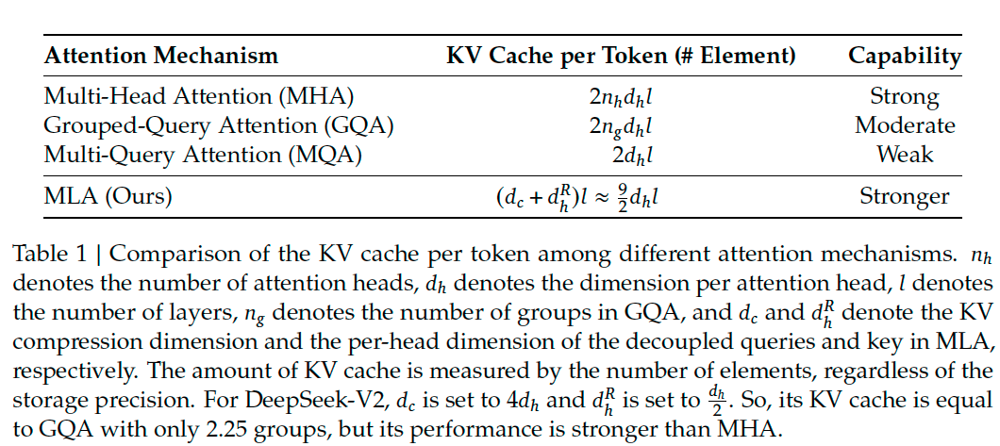

Multi-Head Latent Attention#
Note
Conventional Transformer models usually adopts Multi-Head Attention (MHA)[VSP+23], but during generation, its heavy Key-Value (KV) cache will become the bottleneck that limit the inference efficiency. In order to reduce the KV cache, Multi-Query Attention (MQA)[ALTdJ+23]. and Grouped-Query Attention (GQA)[] are proposed. They require a smaller magnitude of KV cache, but their performance does not match MHA.
For DeepSeek-V2, we design an innovative attention mechanism called Multi-head Latent
Attention (MLA)[DALF+24]. Equipped with low-rank key-value joint compression, MLA achieves better
performance than MHA, but requires a significantly smaller amount of KV cache.
Preliminaries: Standard Multi-Head Attention#
Let \(d\) be the embedding dimension, \(n_h\) be the number of attention heads, \(d_h\) be the dimension per head, and \(\mathbf{h}_{t}\in\mathbb{R}^{d}\) be the attention input of the \(t\)-th token. Standard MHA first produces \(\mathbf{q}_{t},\mathbf{k}_{t}, \mathbf{v}_{t}\in\mathbb{R}^{d_{h}n_h}\) through three matrices \(W^Q,W^K,W^V\in\mathbb{R}^{d_{h}n_{h}\times{d}}\), respectively:
Then, \(\mathbf{q}_{t}, \mathbf{k}_{t}, \mathbf{v}_{t}\) will be sliced into \(n_h\) heads for the multi-head attention computation:
where \(\mathbf{q}_{t,i},\mathbf{k}_{t,i},\mathbf{v}_{t,i}\in\mathbb{R}^{d_h}\) denote the query, key, and value of the \(i\)-th attention head; \(W^{O}\in\mathbb{R}^{d\times{d_{h}n_{h}}}\) denotes the output projection matrix.

Fig. 2 Multi-Head Attention, the red text indicates that it needs to be cached.#
Why KV cache#
Tip
During inference, all keys and values need to be cached to accelerate inference (the keys and values need to be computed only once), so MHA needs to cache \(2n_{h}d_{h}l\) (\(l\) denote layer num) elements for each token. In model deployment, this heavy KV cache is a large bottleneck that limits the maximum batch size and sequence length.
Low-Rank Key-Value Joint Compression#
The core of MLA is the low-rank joint compression for keys and values to reduce KV cache:
where \(\mathbf{c}_{t}^{KV}\in\mathbb{R}^{d_c}\) is the compressed latent vector for keys and values, \(d_c\ll d_{h}n_{h}\) denotes the KV compression dimension, \(W^{DKV}\in\mathbb{R}^{d_{c}\times d}\) and \(W^{UK},W^{UV}\in\mathbb{R}^{d_{h}n_{h}\times d_c}\). During inference, MLA only needs to cache \(\mathbf{c}_{t}^{KV}\), so its KV cache has only \(d_{c}l\) elements.

Fig. 3 Core of MLA: low-rank key-value joint compression.#
In addition, during inference (omit index \(i\) for brevity):
\(W^{UK}\) can be absorbed into \(W^{Q}\), that is:
Similarily, \(W^{UV}\) can be absorbed into \(W^{O}\). We even do not need to compute keys and values out for attention.
Low-Rank Compression for Queries#
In order to reduce the activation memory during training, we also perform low-rank compression for the queries, even if it cannot reduce the KV cache:
where \(\mathbf{c}_{t}^{Q}\in\mathbb{R}^{{d_{c}}'}\) is the compressed latent vector for queries, \({d_c}'\ll d_{h}n_{h}\) denotes the query compression dimension, \(W^{DQ}\in\mathbb{R}^{{d_c}'\times d}\) and \(W^{UQ}\in\mathbb{R}^{d_{h}n_{h}\times {d_c}'}\).

Fig. 4 Compression for queries.#
Decoupled Rotary Position Embedding#
RoPE[SLP+23] is position-sensitive for both keys and queries:
\(W^{UK}\) cannot be absorbed into \(W^{Q}\) any more during inference, since a RoPE matrix related to the currently generating token will lie between \(W^{Q}\) and \(W^{UK}\) and matrix multiplication does not obey a commutative law.
As a solution, we propose the decoupled RoPE strategy that uses additional multi-head
queries \(\mathbf{q}_{t,i}^{R}\in\mathbb{R}^{d_h^{R}}\) and a shared key \(\mathbf{k}_{t}^{R}\in\mathbb{R}^{d_h^{R}}\) to carry RoPE, where \(d_{h}^{R}\) denotes the per-head
dimension of the decoupled queries and key. Equipped with the decoupled RoPE strategy, MLA
performs the following computation:
where \(W^{QR}\in\mathbb{R}^{d_{h}^{R}n_{h}\times {d_{c}}'}\) and \(W^{KR}\in\mathbb{R}^{d_{h}^{R}n_{h}\times d}\) are matrices to produce the decouples queries and key. During inference, the decoupled key should also be cached. Therefore, DeepSeek-V2 requires a total KV cache containing \((d_c+d_{h}^{R})l\) elements.

Fig. 5 Multi-head Latent Attention.#
Tip
MLA uses decoupled keys and queries to carry RoPE, where keys are shared across tokens to save cache.
Caution
Why a shared key is enough?
Ablation of Attention Mechanisms#
Ablation of MHA, GQA, and MQA#
We show the evaluation results for 7B dense models with MHA, GQA, and MQA on four hard benchmarks in Table 8. All of these three models are trained on 1.33T tokens, and share the same architecture except for the attention mechanisms. In addition, for a fair comparison, we align the number of parameters of them to around 7B by adjusting the number of layers. From the table, we can find that MHA demonstrates significant advantages over GQA and MQA on these benchmarks.
Comparison Between MLA and MHA#
In Table 9, we show the evaluation results for MoE models equipped with MLA and MHA, respectively, on four hard benchmarks. For a solid conclusion, we train and evaluate models across two scales. Also, two small MoE models and two large MoE models respectively share the same architecture except for the attention mechanisms. From the table, we can observe that MLA shows better performance than MHA. More importantly, MLA requires a significantly smaller amount of KV cache (14% for small MoE models and 4% for large MoE models) than MHA.
Caution
Comparison Between MLA and MHA for dense models?
Comparison of Key-Value Cache#
Note
We demonstrate a comparison of the KV cache per token among different attention mechanisms in Table 1. MLA requires only a small amount of KV cache, equal to GQA with only 2.25 groups, but can achieve stronger performance than MHA.
